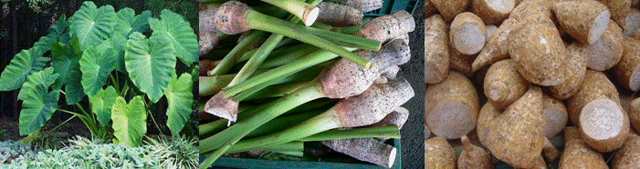

HORT 281 :: Lecture 25 :: ORIGIN, AREA, PRODUCTION, VARIETIES, PACKAGE OF PRACTICES FOR COLACASIA AND TARO

Origin, area, production, varieties, package of practices for COLACASIA and TARO
Colocasia esculenta
Colocasia is a crop of tropical and sub-tropical regions and requires a warm humid climate. Under rainfed conditions, it requires a fairly well distributed rainfall around 120-150 cm during the growth period. Well-drained soil is suitable for uniform development of tubers.
Season
Rainfed crop: May-June to Oct-Nov
Irrigated crop: Throughout the year
Varieties
Sree Rashmi and Sree Pallavi are two improved varieties
Seeds and sowing
Use side tubers each of 25-35 g for planting. About 37,000 side tubers weighing about 1200 kg are required to plant one hectare. Plough or dig the land to a depth of 20-25 cm and bring to a fine tilth. Make ridges 60 cm apart. Plant the side corms at a spacing of 45 cm on the ridges.
Manuring
Apply cattle manure or compost @ 12 t/ha as basal dressing, while preparing the ridges for planting. A fertilizer dose of 80:25:100 kg of N: P2O5:K2O per ha is recommended. Full dose of P2O5 and half dose of N and K2O should be applied within a week after sprouting and the remaining half dose of N and K2O one month after the first application along with weeding and earthing up.
After cultivation
Inter-cultivation is essential in colocasia. Weeding, light hoeing and earthing up are required at 30-45 days and 60-75 days after planting. The leafy parts may be smothered about one month before harvest so as to enhance tuber development.
Irrigation
Ensure sufficient moisture in the soil at the time of planting. For uniform sprouting, irrigate just after planting and one week later. Subsequent irrigation may be given at 12-15 days intervals, depending on the moisture retention capacity of the soil. The irrigation should be stopped 3-4 weeks before harvest. About 9-12 irrigations are required for the crop till harvest. In the case of rainfed crop, if there is prolonged drought, supplementary irrigation is required.
Mulching
Soon after planting, cover the ridges with suitable mulching materials for retention of moisture and to control weeds.
Plant protection
Colocasia blight can be controlled by spraying ziram, zineb, mancozeb or copper oxychloride formulations at 2 g/l of water (1 kg/ha). For controlling serious infestation of aphids, apply dimethoate or monocrotophos at 0.05%. Leaf feeders can be controlled by applying Malathion or carbaryl or endosulfan.
Harvesting
Colocasia becomes ready for harvest five to six months after planting. The mother corms and side tubers are separated after harvest.
Storage of seed material
The side tubers to be used as planting materials are usually separated from the mother corm and stored. Keep seed tuber in sand spread over the floor to avoid rotting.

*********
1. _____________is the botanical name for Taro
2. Taro belongs to the family ______________
3. Rich source of ________ is present in Taro
4. Taro is originated from _________________
5. In Taro the mode of pollination is _____________
| Download this lecture as PDF here |